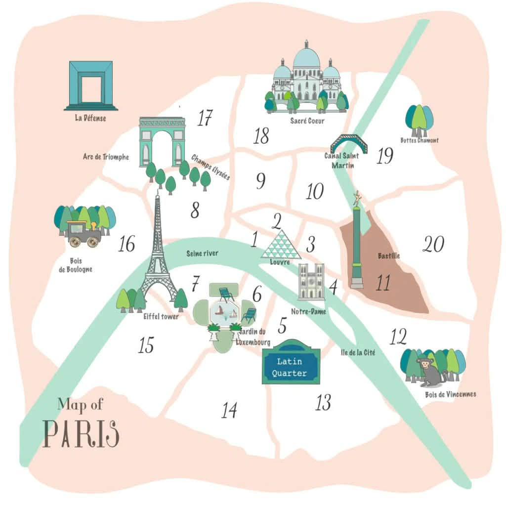

I bor i trekanten mellem Marais, Bastille og République — pariserne kalder hjørnet "le onzième". Her er alt det, I kan nå til fods, med gåtider og ruter fra hoveddøren.
Sådan hænger byen sammen: arrondissementerne snor sig som et sneglehus ud fra Louvre. I bor i 11'eren — på tegningen er det lige mellem Bastille-søjlen og Canal Saint-Martin.

✏️ Skal prikken tegnes ind i Turen går til Paris? Brug overføringskortet — et simpelt kort med kun lejligheden og sigtelinjer.
Alle markører linker til Google Maps + gårute fra lejligheden.
| Sted | Gåtid | Hvorfor | |
|---|---|---|---|
| Le Marais (hele kvarteret) | 🚶 12 min. | Jeres nabokvarter: middelaldergader, palæer, gallerier, falafel og butikker — alt det nedenfor ligger i eller ved det. Levende dag og aften. | 🧭 Rute |
| Place des Vosges (historisk plads) | 🚶 13 min. | Paris' smukkeste plads (1612) med arkader og Victor Hugos hus (gratis museum). | 🧭 Rute |
| Musée Carnavalet (gratis!) | 🚶 15 min. | Paris' byhistorie i to palæer — gratis fast samling og en oase af en gård. Lukket mandag. | 🧭 Rute |
| Musée Picasso (kunstmuseum) | 🚶 17 min. | Verdens største Picasso-samling i smukke Hôtel Salé. Lukket mandag. | 🧭 Rute |
| Rue des Rosiers (falafel!) | 🚶 16 min. | Det jødiske kvarters hovedgade — L'As du Fallafel er institutionen (lukket fredag aften/lørdag). | 🧭 Rute |
| Place de la Bastille & Operaen | 🚶 12 min. | Revolutionspladsen med Julisøjlen og Opéra Bastille — enden af jeres boulevard. | 🧭 Rute |
| Cirque d'Hiver (cirkusbygning) | 🚶 6 min. | Verdens ældste fungerende cirkusbygning (1852) — tjek om der er forestilling. | 🧭 Rute |
| Place de la République (plads) | 🚶 12 min. | Østbyens store knudepunkt med Marianne-statuen — 5 metrolinjer. | 🧭 Rute |
| Père Lachaise (kirkegård) | 🚶 25 min. | Verdens mest besøgte kirkegård: Oscar Wilde, Edith Piaf, Jim Morrison, Chopin. Gratis. | 🧭 Rute |
| Centre Pompidou-området (moderne kunst) | 🚶 20 min. | Beaubourg, Stravinsky-fontænen og gadelivet omkring (tjek åbningsstatus — bygningen renoveres). | 🧭 Rute |
| Île de la Cité & Notre-Dame | 🚶 27 min. | Katedralen er genåbnet efter branden — book gratis tidsbillet i appen 'Notre-Dame de Paris'. | 🧭 Rute |
| Sted | Gåtid | Hvorfor | |
|---|---|---|---|
| Marché Bastille (torsdag 7–14.30!) | 🚶 7 min. | Et af Paris' bedste udendørsmarkeder — på jeres egen boulevard. Ost, østers, rotisseriekylling, blomster. I er der netop en torsdag! | 🧭 Rute |
| Rue Oberkampf & Café Charbon (barstrøg) | 🚶 8 min. | Bar- og bistrostrøget mod nord. Café Charbon er kvarterets ikon — perfekt til apéro. | 🧭 Rute |
| Rue de Charonne (restaurantgade) | 🚶 12 min. | Boutiques og nogle af byens mest roste restauranter (Septime/Clamato — book i god tid!). | 🧭 Rute |
| Marché des Enfants Rouges (overdækket marked) | 🚶 17 min. | Paris' ældste overdækkede marked (1615) — frokostboder fra hele verden. Lukket mandag. | 🧭 Rute |
| Marché d'Aligre (marked) | 🚶 20 min. | Råt, billigt og elsket lokalmarked + loppestande. Tirs–søn formiddag. | 🧭 Rute |
Tjek altid åbningstider — mange lukker mellem frokost og middag, og nogle holder lukket man/søn. Se hele spisesteds-guiden med 23 steder →
| Sted | Gåtid | Hvorfor | |
|---|---|---|---|
| Port de l'Arsenal (lystbådehavn) | 🚶 14 min. | Lystbådehavnen under Bastille med haveanlæg langs vandet — overset og skøn. | 🧭 Rute |
| Coulée verte René-Dumont (højbanepark) | 🚶 15 min. | Verdens første højbanepark (forbilledet for New Yorks High Line) — start ved Bastille og gå mod øst i trækronehøjde. | 🧭 Rute |
| Square Maurice-Gardette (lokal park) | 🚶 7 min. | Kvarterets lokale park — legeplads, bænke og parisisk hverdagsliv. | 🧭 Rute |
| Canal Saint-Martin (kanal) | 🚶 14 min. | Jernbroer, kastanjetræer og caféliv langs vandet — tag en kaffe og se slusebådene. | 🧭 Rute |
| Sted | Gåtid | Hvorfor | |
|---|---|---|---|
| Metro Richard-Lenoir (linje 5) | 🚶 1 min. | Jeres station — 1 minut fra døren. Linje 5: 8 min. til Gare du Nord. | 🧭 Rute |
| Metro Bréguet-Sabin (linje 5) | 🚶 5 min. | Alternativ station mod Bastille-enden. | 🧭 Rute |
| Metro Saint-Ambroise (linje 9) | 🚶 6 min. | Linje 9 mod Grands Boulevards og Trocadéro. | 🧭 Rute |
| Metro Oberkampf (linje 5+9) | 🚶 8 min. | Knudepunkt mod nord — 5'eren og 9'eren mødes her. | 🧭 Rute |
Linje 5 (Richard-Lenoir/Bréguet-Sabin): direkte til Gare du Nord (8 min.), République, Bastille. Linje 9 (Saint-Ambroise/Oberkampf): direkte til Grands Boulevards, Champs-Élysées-kvarteret og Trocadéro. Linje 8 (Bastille/Chemin Vert): mod Invalides/Madeleine — I har reelt hele byen inden for ét skift.
Ned ad boulevarden → Bastille → Rue Saint-Antoine → Place des Vosges (kig ind hos Victor Hugo) → Rue des Francs-Bourgeois (butikker) → Carnavalet → Rue des Rosiers (falafel) → tilbage gennem Rue de Turenne. 🧭 Start ruten
Op gennem Rue Oberkampf → République → Canal Saint-Martin langs vandet til Jardin Villemin → croissant hos Du Pain et des Idées → hjem ad Rue du Faubourg du Temple. 🧭 Start ruten
Bastille → Port de l'Arsenal langs bådene → op på Coulée Verte og gå i trækronehøjde mod Viaduc des Arts' gallerier → retur og evt. Marché d'Aligre (formiddag). 🧭 Start ruten